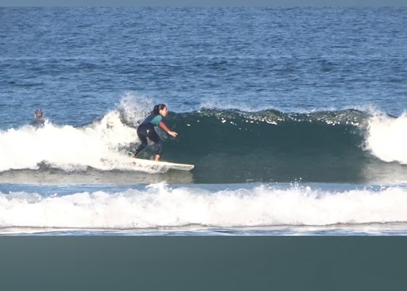
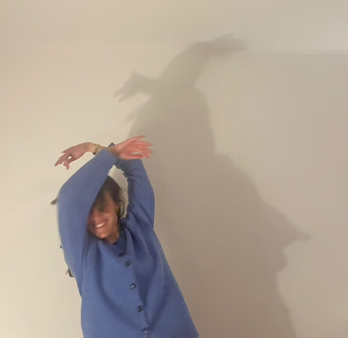

My name is Maria, and I want to introduce myself so that you can get to
know me better. “There are many Marias” (I know), but I would like to
explain what makes me unique.
As a middle child, I developed the ability to be less visible and more
dreamy. Thirty years later, I still enjoy dreaming, but I realized that
turning what we imagine into reality is more useful and fun. We stop
playing pretend and start living it. This, of course, if we are brave
enough to take the risk!
Curious?? Just check my journey map below.
For me, the course in UX/UI at Ironhack was my game changer, because it
helped me to move from social work, where I could have impact in
people's life, to a design world where I can still have impact on
society but doing it while I have fun and develop myself!
During this time I learned that what truly captivates me, it's the
process. "Trust the process" is a phrase that remains very present in my
life, a philosophy I embraced during the Bootcamp at Ironhack.
I believe my professional experience as a social worker is a significant
advantage. This role taught me to handle adverse situations and, in
record time, find the best solutions.
In the past year I embraced some projects as a freelancer, and I still
do. Those roles gave me the opportunity to grow as a professional.
In the future, I want to continue supporting projects that improve
people's lives.
While I was handling all this professionally, I was also having fun in
my personal life doing things like:
Smile.
A Smile provides us with good moments. It is an expression of our
happy side. Seeing someone smile, is contagious and makes you want
to smile too. It works in both ways. A smile a day, keeps the
doctor away!

Surf.
Surf is not just a sport for me. It is a school of soft skills. It
is a place where I connect with nature (for good and for bad), a
moment that I share with others and it's something that challenges
myself to be better. Surfing has shown me that with commitment and
work the improvement is guaranteed.

Dance.
Dancing is something that I've done for as long as I can remember.
For me, dancing is the moment where I shed all my inhibitions and
just have some fun. As my mother says: “You have to dance like
nobody is looking at you”!
If you feel that we could match, please check projects page to see some
of my work! Or, if it was love at first time, just move to the contact
page and take the first step.